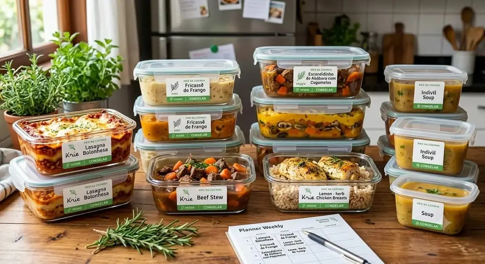

Smart Cooking for Busy Routines
Optimize your routine, eliminate kitchen waste, and indulge in the comfort of a chef-quality, homemade meal whenever you want.
Explore Our MenuDesigned for Perfect Freezing, Made for Your Life
At Krie na Cozinha, we combine culinary passion with meal prep efficiency. Our dishes aren't just frozen; they are strategically developed, tested, and balanced to ensure that thawing preserves 100% of the original texture, nutrients, and homemade flavor.
-
⏱️ Reclaim Your Time
Skip the daily kitchen rush. Our meals are portioned and ready to reheat in minutes, giving you hours back in your week.
-
🌱 Cook Once, Enjoy Anytime
Say goodbye to forgotten ingredients rotting in the fridge. We help you plan ahead, reduce food waste, and save money.
-
👩🍳 Chef-Quality At Home
No preservatives, no artificial ingredients. Just real, wholesome food prepared with technique so you can eat well even on your busiest days.
Ready to transform your week?
Check out our seasonal Menu to discover our freezable recipes, or head over to the Weekly Planner to build your custom lunch and dinner schedule effortlessly.
Start Planning